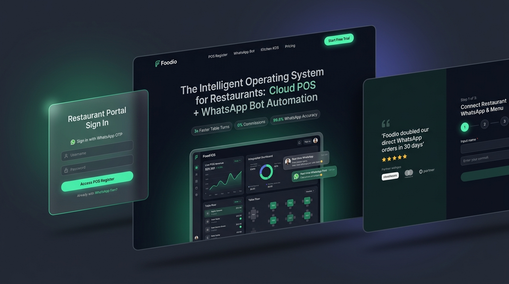

Interactive Preview Grid
Live Interconnected Foodio Screens
Every button, WhatsApp chat simulator, ROI calculator slider, and onboarding step is fully interactive in real time.
1. Main Page (index.html)
Open Fullscreen
2. POS Login (login.html)
Open Fullscreen
3. Onboarding (signup.html)
Open Fullscreen
Original Design Blueprint Comparison
Reference design mockup generated for the Foodio Nexus-Style 3-in-1 UI
